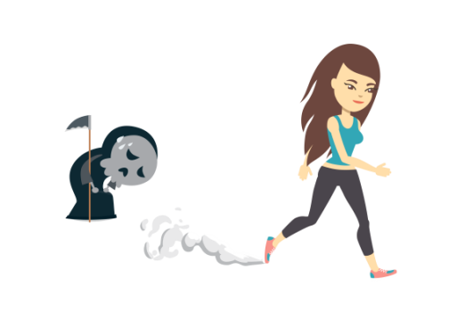
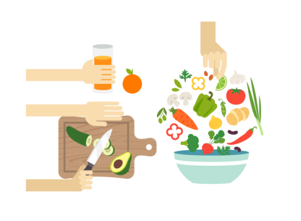

给我一首歌的时间，告诉你癌后生活护理该怎么办
现在的年轻人呀，要是不得个什么“癌”好像就跟不上时代了，动辄就懒癌晚期、穷癌遍地，直男癌、手癌、尴尬癌更是屡见不鲜。你要问他们“癌”后生活怎么办，那肯定是直接放弃治疗呀！日常开开玩笑也就算了，如果真的不幸患上癌症（比如宫颈癌），你真的知道该怎么办吗？给我一首歌的时间，让我告诉你~
俗话说，病是三分治、七分养。虽然我们无法改变生病的事实，但至少可以振作起来，积极治疗来改变这种状态。就像一首歌有前奏、主歌、尾声，癌后的生活护理同样如此，如果做得好也是可以续写自己生命的乐章哒！

生活护理之前奏：《树立信心，保持乐观》。
我们在遇到打击和挫折时，难免会出现震惊、恐慌、消沉或焦虑的情绪。尤其在得知患有可能改变自己命运的疾病时，更是崩溃不已。如何从犹豫彷徨中走出来，仅仅依靠医生、护士的帮助还是不够的，我们要从自身出发，积极面对。有意识地来进行心理调节，保持积极平和的心态，为下一步的治疗做好充分的心理准备。有时，坚强的信念是会创造奇迹的！

生活护理之主歌：《积极治疗，坚持随访》。
宫颈癌的治疗是一个长期的过程，要做好长期作战的计划和准备。无论接受何种治疗，只要条件允许，尽可能坚持做完医生计划安排的疗程，不要半途而废。治疗结束后坚持定期随访复查，对疾病的状态实时评估，发现问题及时合理地进行治疗。一般情况下是前两年每3个月复查一次，第3~5年每半年复查一次，以后每年至少复查一次，毕竟，定期复查随访是提高治疗效果的重要保障。
生活护理之尾声：《合理膳食，适当运动》。
饮食调理也是疾病康复中的重要一环。宫颈癌患者要尽可能地进食营养丰富的食物，而且要注意营养均衡，合理搭配，全面补充蛋白、微量元素和维生素等。同时保证充足的睡眠和休息，适当做些力所能及的运动，但要注意避免劳累。
宫颈癌没有想象中那么可怕，我们也比自己想象中更强大。保持乐观向上的心态，坚持健康良好的生活方式，做好长期抗战的准备，结合正规医院制定的科学合理的治疗方案，这些措施一定能达到目前最好的治疗效果，帮患者续写生命的美好乐章。
